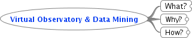

Virtual Observatory & Data Mining

Virtual Observatory & Data Mining
What?
Virtual Observatory
Infrastructure
Standards & protocols
!= Appliactions
Data Mining
Decission Trees (DT)
Support Vector Machines (SVM)
Be Stars
Photometric Data Mining
Spectral Data MIning
Why?
Motivation
Paradigm Shift => Astroinformatics
Distributed processing
www analogy
How?
Introduction to Virtual Observatory
Introduction to Data MIning
Principles & examples
wiki (http>//physics.muni.cz/~vazny/wiki/)
Source Control (git)